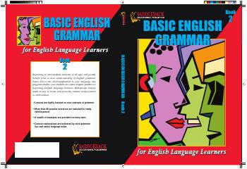

BEIngliz tili grammatikasini o'rganish uchun amaliy mashqlar va qoidalarga boy qo'llanma.
Ushbu kitob ingliz tili grammatikasining asosiy qoidalarini o'rganuvchilar uchun mo'ljallangan qo'llanmadir. Unda otlar, olmoshlar, sifatlar, fe'llar va boshqa nutq qismlari bo'yicha tushunarli tushuntirishlar hamda 80 dan ortiq amaliy mashqlar keltirilgan.